Obras de Helena Kolody
Sobre
Explore as obras de Helena Kolody reunidas no catálogo, em ordem de primeira publicação. Pesquise pelo título ou escolha um período.
16 obras · ordem de lançamento
-
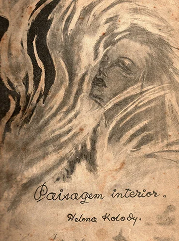
Paisagem Interior(1941) -
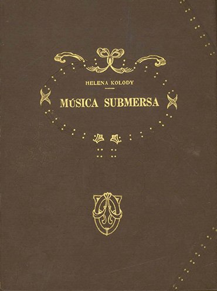
Música Submersa(1945) - A Sombra no Rio(1951)
-
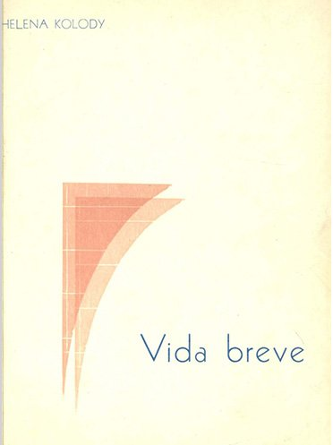
Vida Breve(1964) -
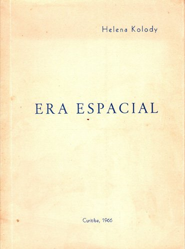
Era Espacial(1966) -
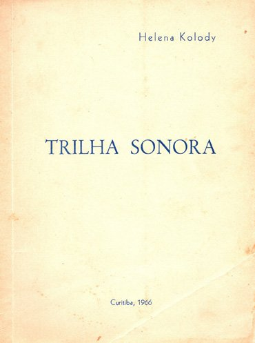
Trilha Sonora(1966) -
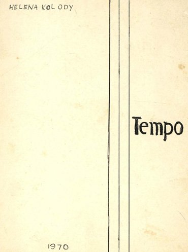
Tempo(1970) -
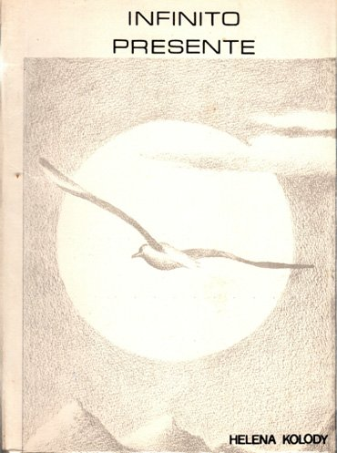
Infinito Presente(1980) -
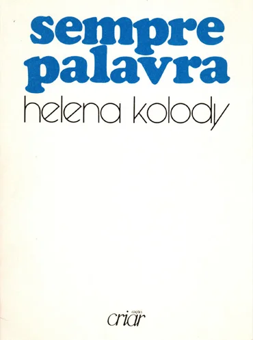
Sempre Palavra(1985) -
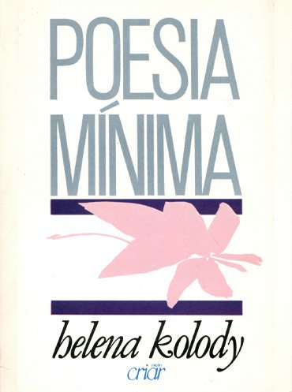
Poesia Mínima(1986) -
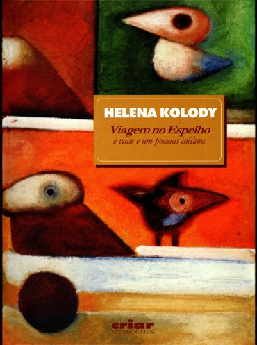
Viagem no Espelho(1988) -
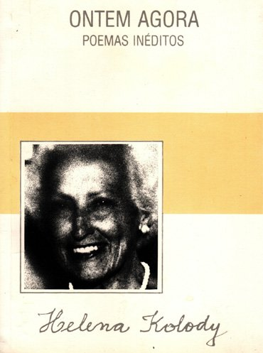
Ontem Agora(1991) -
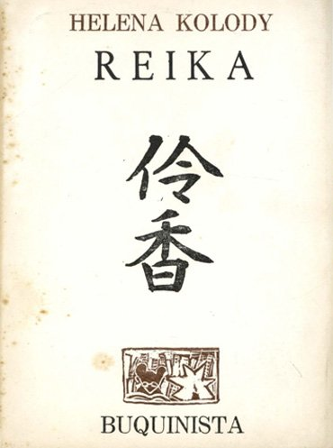
Reika(1993) -
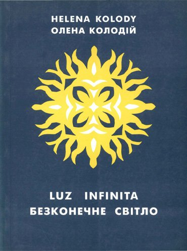
Luz Infinita(1997) - Memórias de Nhá Mariquinha(2002)
-
Tear deTear de Palavras(2012)
PalavrasPublicado como apêndice
Nenhuma obra encontrada. Tente outro título ou outra década.
Esta página reúne os 16 títulos de Helena Kolody selecionados para o CBEP. Os anos indicam a primeira publicação de cada obra; as capas apresentadas podem pertencer a edições posteriores.
Ainda não está disponível a capa de Tear de Palavras.
Consultar bibliografia de Helena Kolody